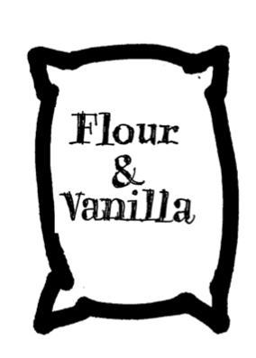
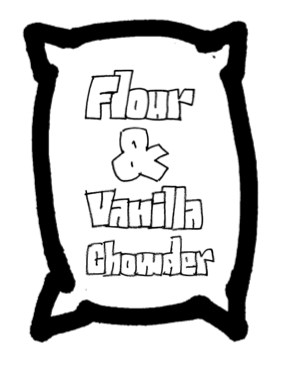

cid = 'Website'
# H O M E
doc.title = 'Parametric Axes'
page = doc.newPage(title='Home', name='index.html', template='home')
doc.footerHtml = """Let us know what you think. Do you have any questions for us? info@designdesign.space
"""
box = page['Introduction']
Parametric axes
A lot has already been written about the naming of axes in Variable Font, but creating standards and definintions about what they exactly do, is falling behind.
box = page['Main']['Content']
The reason for that is not a lack of interest, but that the current discussion is on the side with the most variable freedom and design choices exists. A type designer can rightfully point out that a change in weight [wght] also implicates a change in width, but the amount depends on optical size, on the details of the design and on taste of the designer.
The necessity and use of parametric axes in Variable Fonts can best be illustrated with other modular environments, such as the preparation of food.

If the level of Granularity is a measure for flour to be used in certain kinds of bread, then the bakery would not expect an increasing amount of Vanilla to be mixed with that level.

Chefs may never be able to agree on the exact ingredients, process and taste of the best Chowder, but most will agree that Salt, Pepper and Potatos are separate ingredients. Not to be used in a pre-ordered mixture.
To control the quality and behavior of any kind of product, the process of creation has to be broken down into modular behavior, to the least possible amount of independent parameters.
A cook wants to use separate jars for Flour and Vanilla. And separate dispensers for Pepper and Salt, to mix them in exactly the right amount when using them.

Specific combinations can be useful to save time in large volumes or when the ingedients interact, so their balance needs to be prepared. But even with such half products, the preparation still starts with the choice of separate ingredients.
Proposing axes
This guide was prepared in July 2017 for presentation to the public, the specification’s owners, and the OpenType Variations working group. Our goal is to record what we have learned about variable fonts and have put into practice, which we believe will be generally useful to the specification, and to propose a new, systematic approach to registering and using axes.
This proposal does not seek to classify the designs of typefaces parametrically, only what the values of the parameters are. Furthermore, it is offered as a beginning, suggesting the need for—but not containing—suggestions for many important attributes of non-Latin fonts.
Registering axes
The registration of the axes here is also intended to be used as part of a system including the registration of what function an axis performs for programs and/or users along the existing path from script selection to the rendered glyph in a document, aka the Mantra. Documentation of that part of the system, including the registration of what function an axis provides, is still in development and will follow soon.
The registration of the axes here is also intended to be used as part of a system including the registration of what function an axis performs for programs and/or users along the existing path from script selection to the rendered glyph in a document, aka the Mantra. Documentation of that part of the system, including the registration of what function an axis provides, is still in development and will follow soon.